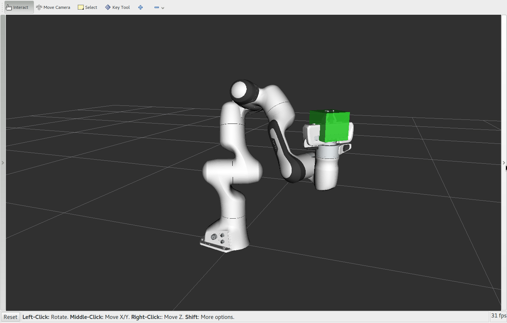

Move Group Python Interface
{kind=link}
One of the simplest MoveIt user interfaces is through the Python-based Move Group Interface. These wrappers provide functionality for most operations that the average user will likely need, specifically setting joint or pose goals, creating motion plans, moving the robot, adding objects into the environment and attaching/detaching objects from the robot.
Watch this quick YouTube video demo to see the power of the Move Group Python interface!
Getting Started
If you haven’t already done so, make sure you’ve completed the steps in Getting Started.
Start RViz and MoveGroup node
Open two shells. Start RViz and wait for everything to finish loading in the first shell:
roslaunch panda_moveit_config demo.launch
Now run the Python code directly in the other shell using rosrun.
Note in some instances you may need to make the python script executable:
rosrun moveit_tutorials move_group_python_interface_tutorial.py
Expected Output
In RViz, we should be able to see the following:
- Press <enter> in the shell terminal where you ran the
rosruncommand in between each step The robot plans and moves its arm to the joint goal.
The robot plans a path to a pose goal.
The robot plans a Cartesian path.
The robot displays the Cartesian path plan again.
The robot executes the Cartesian path plan.
A box appears at the location of the Panda end effector.
The box changes colors to indicate that it is now attached.
The robot plans and executes a Cartesian path with the box attached.
The box changes colors again to indicate that it is now detached.
The box disappears.
The Entire Code
Note: the entire code can be seen here in the tutorials GitHub repository.
To use the Python MoveIt interfaces, we will import the moveit_commander namespace. This namespace provides us with a MoveGroupCommander class, a PlanningSceneInterface class, and a RobotCommander class. More on these below. We also import rospy and some messages that we will use:
# Python 2/3 compatibility imports
from __future__ import print_function
from six.moves import input
import sys
import copy
import rospy
import moveit_commander
import moveit_msgs.msg
import geometry_msgs.msg
from math import pi
from std_msgs.msg import String
from moveit_commander.conversions import pose_to_list
First initialize moveit_commander and a rospy node:
moveit_commander.roscpp_initialize(sys.argv)
rospy.init_node("move_group_python_interface_tutorial", anonymous=True)
Instantiate a RobotCommander object. Provides information such as the robot’s kinematic model and the robot’s current joint states
robot = moveit_commander.RobotCommander()
Instantiate a PlanningSceneInterface object. This provides a remote interface for getting, setting, and updating the robot’s internal understanding of the surrounding world:
scene = moveit_commander.PlanningSceneInterface()
Instantiate a MoveGroupCommander object. This object is an interface to a planning group (group of joints). In this tutorial the group is the primary arm joints in the Panda robot, so we set the group’s name to “panda_arm”. If you are using a different robot, change this value to the name of your robot arm planning group. This interface can be used to plan and execute motions:
group_name = "panda_arm"
move_group = moveit_commander.MoveGroupCommander(group_name)
Create a DisplayTrajectory ROS publisher which is used to display trajectories in Rviz:
display_trajectory_publisher = rospy.Publisher(
"/display_planned_path", moveit_msgs.msg.DisplayTrajectory, queue_size=20
)
Getting Basic Information
# We can get the name of the reference frame for this robot:
planning_frame = move_group.get_planning_frame()
print("============ Planning frame: %s" % planning_frame)
# We can also print the name of the end-effector link for this group:
eef_link = move_group.get_end_effector_link()
print("============ End effector link: %s" % eef_link)
# We can get a list of all the groups in the robot:
group_names = robot.get_group_names()
print("============ Available Planning Groups:", robot.get_group_names())
# Sometimes for debugging it is useful to print the entire state of the
# robot:
print("============ Printing robot state")
print(robot.get_current_state())
print("")
Planning to a Joint Goal
The Panda’s zero configuration is at a singularity so the first thing we want to do is move it to a slightly better configuration.
# We can get the joint values from the group and adjust some of the values:
joint_goal = move_group.get_current_joint_values()
joint_goal[0] = 0
joint_goal[1] = -pi / 4
joint_goal[2] = 0
joint_goal[3] = -pi / 2
joint_goal[4] = 0
joint_goal[5] = pi / 3
joint_goal[6] = 0
# The go command can be called with joint values, poses, or without any
# parameters if you have already set the pose or joint target for the group
move_group.go(joint_goal, wait=True)
# Calling ``stop()`` ensures that there is no residual movement
move_group.stop()
Planning to a Pose Goal
We can plan a motion for this group to a desired pose for the end-effector:
pose_goal = geometry_msgs.msg.Pose()
pose_goal.orientation.w = 1.0
pose_goal.position.x = 0.4
pose_goal.position.y = 0.1
pose_goal.position.z = 0.4
move_group.set_pose_target(pose_goal)
Now, we call the planner to compute the plan and execute it.
plan = move_group.go(wait=True)
# Calling `stop()` ensures that there is no residual movement
move_group.stop()
# It is always good to clear your targets after planning with poses.
# Note: there is no equivalent function for clear_joint_value_targets()
move_group.clear_pose_targets()
Cartesian Paths
You can plan a Cartesian path directly by specifying a list of waypoints for the end-effector to go through. If executing interactively in a Python shell, set scale = 1.0.
waypoints = []
wpose = move_group.get_current_pose().pose
wpose.position.z -= scale * 0.1 # First move up (z)
wpose.position.y += scale * 0.2 # and sideways (y)
waypoints.append(copy.deepcopy(wpose))
wpose.position.x += scale * 0.1 # Second move forward/backwards in (x)
waypoints.append(copy.deepcopy(wpose))
wpose.position.y -= scale * 0.1 # Third move sideways (y)
waypoints.append(copy.deepcopy(wpose))
# We want the Cartesian path to be interpolated at a resolution of 1 cm
# which is why we will specify 0.01 as the eef_step in Cartesian
# translation. We will disable the jump threshold by setting it to 0.0,
# ignoring the check for infeasible jumps in joint space, which is sufficient
# for this tutorial.
(plan, fraction) = move_group.compute_cartesian_path(
waypoints, 0.01, 0.0 # waypoints to follow # eef_step
) # jump_threshold
# Note: We are just planning, not asking move_group to actually move the robot yet:
return plan, fraction
Displaying a Trajectory
You can ask RViz to visualize a plan (aka trajectory) for you. But the group.plan() method does this automatically so this is not that useful here (it just displays the same trajectory again):
A DisplayTrajectory msg has two primary fields, trajectory_start and trajectory. We populate the trajectory_start with our current robot state to copy over any AttachedCollisionObjects and add our plan to the trajectory.
display_trajectory = moveit_msgs.msg.DisplayTrajectory()
display_trajectory.trajectory_start = robot.get_current_state()
display_trajectory.trajectory.append(plan)
# Publish
display_trajectory_publisher.publish(display_trajectory)
Executing a Plan
Use execute if you would like the robot to follow the plan that has already been computed:
move_group.execute(plan, wait=True)
Note: The robot’s current joint state must be within some tolerance of the
first waypoint in the RobotTrajectory or execute() will fail
Adding Objects to the Planning Scene
First, we will create a box in the planning scene between the fingers:
box_pose = geometry_msgs.msg.PoseStamped()
box_pose.header.frame_id = "panda_hand"
box_pose.pose.orientation.w = 1.0
box_pose.pose.position.z = 0.11 # above the panda_hand frame
box_name = "box"
scene.add_box(box_name, box_pose, size=(0.075, 0.075, 0.075))
Ensuring Collision Updates Are Received
If the Python node dies before publishing a collision object update message, the message
could get lost and the box will not appear. To ensure that the updates are
made, we wait until we see the changes reflected in the
get_attached_objects() and get_known_object_names() lists.
For the purpose of this tutorial, we call this function after adding,
removing, attaching or detaching an object in the planning scene. We then wait
until the updates have been made or timeout seconds have passed
start = rospy.get_time()
seconds = rospy.get_time()
while (seconds - start < timeout) and not rospy.is_shutdown():
# Test if the box is in attached objects
attached_objects = scene.get_attached_objects([box_name])
is_attached = len(attached_objects.keys()) > 0
# Test if the box is in the scene.
# Note that attaching the box will remove it from known_objects
is_known = box_name in scene.get_known_object_names()
# Test if we are in the expected state
if (box_is_attached == is_attached) and (box_is_known == is_known):
return True
# Sleep so that we give other threads time on the processor
rospy.sleep(0.1)
seconds = rospy.get_time()
# If we exited the while loop without returning then we timed out
return False
Attaching Objects to the Robot
Next, we will attach the box to the Panda wrist. Manipulating objects requires the
robot be able to touch them without the planning scene reporting the contact as a
collision. By adding link names to the touch_links array, we are telling the
planning scene to ignore collisions between those links and the box. For the Panda
robot, we set grasping_group = 'hand'. If you are using a different robot,
you should change this value to the name of your end effector group name.
grasping_group = "hand"
touch_links = robot.get_link_names(group=grasping_group)
scene.attach_box(eef_link, box_name, touch_links=touch_links)
Detaching Objects from the Robot
We can also detach and remove the object from the planning scene:
scene.remove_attached_object(eef_link, name=box_name)
Removing Objects from the Planning Scene
We can remove the box from the world.
scene.remove_world_object(box_name)
Note: The object must be detached before we can remove it from the world